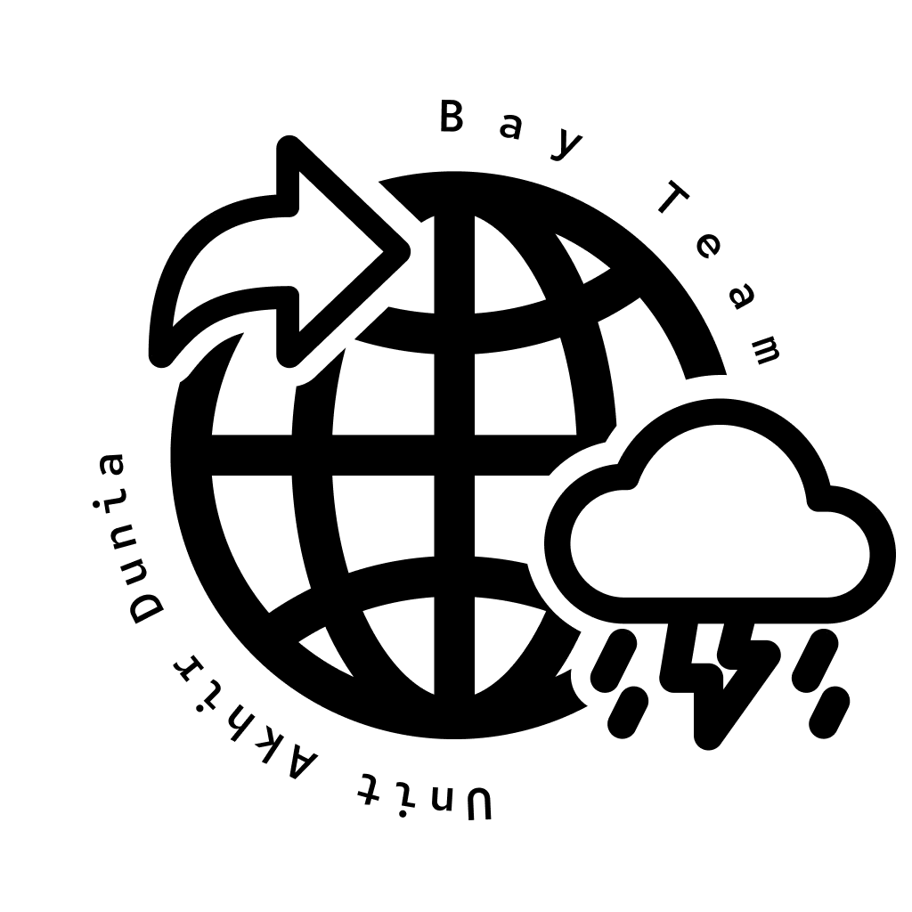

DICARI
1111

ORANG HILANG
(
tahun)
Ciri-ciri:
- Tinggi badan rata-rata,
- Berat badan sedang,
- Rambut seperti pada gambar,
- Mengenakan pakaian hitam-hitam,
- Luka silet di pipi
Terakhir terlihat sendirian mengunjungi Kota Lama, Semarang.
Hubungi: 0811 1111 1024